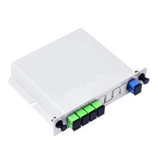
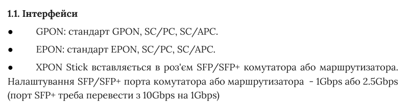
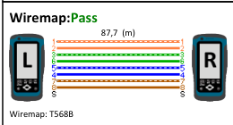

Роль сайту
Вибрати виконання й знайти його документацію
NG Group поєднує технічний каталог, документи й консультацію. Огляд простежує, чи можна знайти характеристику потрібного виконання, встановити, який документ її підтверджує, і підготувати питання про ту саму модель.
| Що перевіряємо | Питання відвідувача |
|---|---|
| Точність характеристики | Яке значення відповідає потрібному виконанню й на що воно спирається? |
| Застосовність документа | Чи охоплює файл цю модель, ревізію та умови використання? |
| Продовження роботи | Чи збережеться предмет питання в консультації або під час переходу до ASP24? |
На сайті є інструкції, характеристики, матеріали випробувань і партнерська пропозиція. Складність виникає, коли документи наводять різні значення, підпис не пояснює типу файла або форма не показує вибраної моделі. [1, 3–10]
Метод і межі
Основу становлять настільні сценарії, збережені стани 9–10 вересня 2026 року та архівні сторінки. Для частини пізніших спостережень і повних документів використано попередній огляд; це зазначено у відповідних джерелах. Звернень не надсилали. Обладнання, CRM і фактичний сервіс не випробовували.
Демо показує запропоновані зв’язки на умовних даних. Усі дії локальні; компанія не отримує підготовлених у демо питань.
Пошук і відбір
Від позначення моделі до умов використання
У збережених станах 10 вересня 2026 року M1550-C знаходився за короткою й повною назвою. Для пошуку за потребою самих слів замало: кабель, наприклад, потрібно добирати за матеріалом і середовищем прокладання. [1]
Один маршрут добору кабелю · 10.09.2026
| Умова | Товарних карток |
|---|---|
| Уся категорія | 10 |
| Cu | 4 |
| Cu + Ззовні | 2 |
| Cu + Ззовні + 4 пари | 1 |
Кількість товарних карток у збережених DOM одного проходу. Послідовно додано Cu, «Ззовні» й чотири пари. Діаметр 0,50 мм у цьому маршруті не обирали. Це не воронка покупців і не оцінка повноти каталогу. [1]
Після добору відкрито NG LAN UTP CAT-5e Cu 4×2×0,5, 305 м. Навігаційне посилання «Вита пара» відкрило початкову категорію з 10 картками без попередніх умов. Повернення кнопкою браузера в цьому проході не перевіряли.
Пізніший огляд описує збереження умов після повернення з картки, але не деталізує спосіб повернення. Тому результати не можна прямо зіставляти або пояснювати причину різниці. [1]
Довжина допомагає не лише розрізняти товари
Між архівними знімками 2022 і 2026 років до фільтрів застосування, кількості пар і матеріалу додалися діаметр, довжина та колір. Єдина видима опція 305 м не дає вибору між довжинами. Проте довжина потрібна для опису товару, зіставлення з вимогами й розрахунку метражу; діаметр і колір у цьому знімку давали вибір. [2]
У демо обрані умови видимі поруч із результатами. Коли лишається кілька кандидатів, наступний крок — пояснити відмінності їхніх виконань.
Відмінності моделей
Дільники: технологія і фізичне виконання
Фільтри 1×8 та SC/UPC залишили три дільники NG OPTICS у проході, описаному в попередньому огляді. Перше позначення задає один вхід і вісім виходів; друге — роз’єм і обробку його торця. Спосіб монтажу все ще потребує вибору. [1, 3]
Назви ABS, DIN і PLC стоять в одному ряду, хоча позначають різне. За описами, всі три дільники виготовлено за технологією PLC. ABS указує на корпус, а DIN у цьому каталозі — на касетне виконання для оптичного боксу.
| Виконання | Що допомагає вибрати | Що слід уточнити |
|---|---|---|
| ABS | Пластиковий корпус і відводи. | Габарити й спосіб встановлення конкретної моделі. |
| Касета DIN | Адаптери та напрямні оптичного боксу. | 125×100×25 мм у картці проти 130×100×25 мм у PDF. |
| PLC без уточнення | Оптичні параметри й відводи. | Однозначну назву корпусу або виконання. |
Історичні картки — за попереднім оглядом. У PDF, прочитаному 09.10.2026, на фізичній с. 2 для касети DIN 1×8 наведено 130×100×25 мм. Застосовність до конкретної поставки не встановлена; назва DIN не доводить монтажу на електротехнічну DIN-рейку. [3]

На с. 2 специфікації PLC для 1×8 наведено максимальні втрати 10,2 дБ без конекторів. Це не пояснює значення 10,7 дБ в історичній картці: для зіставлення потрібні виконання та однакові умови, зокрема склад конекторів. [3]
Точність інформації
Якому виконанню відповідає характеристика
За попереднім оглядом, картка Grandway FHP12A двічі наводила діапазон вимірювання оптичної потужності −10…+70 dBm — в описі й таблиці. dBm — рівень потужності відносно 1 мВт. Повторюваність запису не підтверджує його правильності. Діапазон слід зіставити з документацією саме цього виконання. [4]
| Зіставлені джерела | Діапазон, dBm |
|---|---|
| Картка NG у зрізі попереднього огляду | −10…+70 dBm |
| Вебсторінка Grandway | −65…+10 dBm |
| PDF FHP12SeriesMiniPowerMeter; шлях /20201102/ | −70…+10 dBm |
| Preview FHP12.pdf; шлях /20260730/ | 850 нм: −60…+10 dBm; 1300/1310/1490/1550/1625 нм: −65…+10 dBm |
PDF звірено 09.10.2026: FHP12SeriesMiniPowerMeter.pdf — фізична с. 1, друкована 31; FHP12.pdf — фізична с. 1, друкована 71. Номери не означають обсягу; дата в URL не доводить редакції. Поставка невідома. [4]
У джерелах виробника нижня межа також різниться. Вибрати −65 або −70 навмання означало б замінити одну непевність іншою. Потрібні точне виконання приладу, відповідний паспорт та умови вимірювання, зокрема довжина хвилі.
Від джерела до узгодженого значення
| Крок | Результат |
|---|---|
| Встановити модель і ревізію | Зрозуміло, який виріб описуємо. |
| Знайти застосовне джерело | Відомі документ, умови й межі показника. |
| Узгодити публікацію | Картка, таблиця й добір використовують те саме значення для того самого виконання й тих самих умов. |
Автоматична перевірка знаходить розбіжності, але не визначає застосовності документа. У демо модель і виконання видно поруч із ним.
Умови застосування
Потужність виходу та час роботи — різні параметри
В описі M1550-C зазначено загальну межу 35 Вт, вихід DC 12 В / 2 А, режим USB-C 12 В / 1,5 А та шість елементів 3,7 В × 2,6 А·год. Потужність виходу обмежує навантаження, а запас енергії потрібний для розрахунку тривалості роботи. [5]
| Параметр | Що можна обчислити |
|---|---|
| Окремий вихід | DC: 12 × 2 = 24 Вт; USB-C у цьому режимі: 12 × 1,5 = 18 Вт. |
| Одночасне навантаження | 35 Вт — окрема загальна межа; розподіл між портами слід уточнити. |
| Номінальна енергія елементів | 6 × 3,7 × 2,6 = 57,72 Вт·год. |
| Стале навантаження, Вт | Умовний час, год |
|---|---|
| 5 | 11,54 |
| 7,5 | 7,70 |
| 10 | 5,77 |
| 13 | 4,44 |
| 15 | 3,85 |
| 20 | 2,89 |
Умовний розрахунок t = E/P, E = 57,72 Вт·год. Навантаження стале; втрати, старіння й режими відключення не враховано. Крива не є результатом випробування. [5]
Джерело називає споживання ONU «до 3 Вт», маршрутизатора — «до 10–12 Вт». Значення 13 і 15 Вт тут — сценарії сталого навантаження, не номінали адаптерів чи виміряне споживання.
За такого сталого навантаження розрахунок дає 4,44 та 3,85 години. Заявлені 6–8 годин можуть відповідати іншому середньому споживанню; наведені числа цього не встановлюють і не спростовують. Для перевірки потрібні конкретні пристрої та умови роботи.
Документація
Назва й опис документа мають пояснювати його призначення
Інструкція XPON Stick описує підготовку порту, реєстрацію на станції провайдера (OLT), налаштування доступу, резервне копіювання й оновлення. У цьому проході прочитано відповідні с. 2, 4, 9 і 10 отриманого десятисторінкового PDF. Це читання документа, не перевірка сумісності обладнання. [6]

Біля моделі варто розмістити короткий блок «Перед підключенням»: потрібний режим порту, погодження з провайдером і посилання на відповідну інструкцію. Так відвідувач побачить умови ще до вибору обладнання.
| Матеріал | Що встановлено | Межа |
|---|---|---|
| «Специфікації» NG-1550-6 | У PDF прочитано сертифікат, декларацію та її реєстрацію. | Комплект документів про відповідність, а не технічна специфікація. |
| Кабельний документ | У переліку 10.09 видно дату 13.16.2025. | У PDF строк 14.06.2024–13.06.2025; кінцева дата не є датою редакції. |
Історичний підпис 13.16.2025 і надрукований строк — окремі спостереження. Обидві сторінки twisted.pdf та три сторінки _2024_.pdf прочитано візуально 09.10.2026. Юридичну достатність і відповідність поставці цим не встановлено. [7]
У переліку файлів потрібно вказати тип документа, модель або серію, редакцію чи період і мову. Інструкція пояснює використання, специфікація — характеристики, а документ відповідності має власний предмет підтвердження.
У демо технічний опис DEMO-U02 прямо називає виконання D1 і демонстраційний статус, а повернення веде до тієї самої моделі.
Докази характеристик
Що саме підтверджує випробування
У двох односторінкових кабельних звітах, прочитаних 09.10.2026, наведено Pass за TIA Cat 5e Permanent Link і дату тесту 30.10.2024. Довжина CU-8 — 87,7 м, CCAG — 16,1 м. Результати стосуються зазначених зразків і режиму, а не всіх товарів відповідного типу. [8]

| Матеріал | Що можна стверджувати | Чого він не встановлює |
|---|---|---|
| CU-8: 87,7 м | Опубліковано результат конкретної перевірки кабельної лінії. | Властивостей усіх партій і довільної довжини. |
| CCAG: 16,1 м | Описано інший, коротший перевірений зразок. | Результату на значно довшій лінії або для іншого режиму. |
CCAG.pdf має одну фізичну сторінку з друкованим номером 4. Прочитано весь доступний файл, але обсяг первинного комплекту невідомий. Дата й довжина стосуються зразка, а не кожної бухти. [8]
У фрагменті CU-8 немає достатньо точного позначення моделі й партії. Тому прив’язати результат до конкретної пропозиції не вдається. Два доступні приклади також не дозволяють судити, чи проводилися інші випробування.
Як використати доказ для вибору
Поруч зі звітом потрібні модель або зразок, довжина, обладнання, режим і умови. Якщо рекламна заява ширша за перевірені умови, її слід звузити або підкріпити відповідним випробуванням.
Консультація й партнерство
Звернення зі сторінки товару має зберігати назву моделі
У формі зі сторінки M1550-C, збереженій 10 вересня 2026 року, назви моделі немає. Загальний заголовок і контактні поля не дозволяють відвідувачеві перевірити, про який товар піде запит. [9]
| Рівень перевірки | Що відомо |
|---|---|
| Видима форма, 10.09 | Заголовок, ім’я, телефон, email, коментар і розмір партії; видимої назви моделі немає. |
| Збережений HTML, 09.09 | Приховане поле product не має заданого атрибута value. Це інший стан і дата. |
| Надсилання та отримання | Форму не надсилали. Значення перед відправленням і отримання моделі менеджером не встановлені. |
Видима назва, атрибут value у HTML, поточна властивість поля та отриманий запит — різні рівні перевірки. JavaScript міг заповнити поле після завантаження. Відсутній атрибут у збереженому HTML не доводить, що модель втрачалася під час надсилання.
Із документа DEMO-U02/D1 у демо відкривається чернетка запитання з назвою моделі. Її можна скопіювати або зберегти; менеджеру вона не надсилається.
Перевірити в демо: документ тієї самої моделі
Партнерство починається з іншої мети
На партнерській сторінці NG пропонує обладнання на тест, персонального менеджера й індивідуальні умови. Уточнення сумісності, запит партії та регулярне постачання вимагають різних вихідних відомостей. Для технічного запитання кількість може бути ще невідомою. [9]
Документ на телефоні
Прочитати документ і повернутися до моделі
Технічний документ може знадобитися безпосередньо біля обладнання. До відкриття файла відвідувач має бачити модель, виконання й тип документа. Після читання має бути зрозуміло, як повернутися до картки того самого виробу або поставити запитання про нього.
Поряд із PDF доцільно дати короткий опис: що охоплює документ і де шукати потрібний параметр. Він допомагає орієнтуватися в джерелі, але не замінює специфікації чи сертифіката.
| Перехід | Що потрібно зберегти |
|---|---|
| Документ → модель | Точне позначення виробу та виконання. |
| Модель → запитання | Назву моделі й уже введений текст. |
| Повернення з іншої вкладки | Доступ до документа та чернетки. |
Екранна клавіатура не має перекривати поле й кнопку завершення. Копіювання тексту, збереження документа та повернення з іншої вкладки потребують окремої перевірки на iPhone. Чернетка в браузері не означає, що запитання вже отримала компанія.
Читати цей огляд у адаптивному HTML
Початкове дослідження робочих ASP24 і NG Group виконано в настільних сценаріях. Тут сформульовано рекомендації для мобільного подання; перевірка демо на синтетичних даних не є повторним дослідженням мобільних сайтів компаній.
Сервіс
Що підготувати до звернення в сервіс
Сервісна сторінка пояснює попереднє погодження ремонту, підготовку обладнання та визначення вартості після діагностики. Є конкретна порада: якщо пристрій не вмикається, передати разом із ним адаптер. [10]
| Етап | Що вже пояснено | Що можна уточнити |
|---|---|---|
| Підготовка | Погодження ремонту й комплекту. | Модель, ознаки несправності, умови її появи та спосіб подання заявки. |
| Діагностика й ремонт | Різні ситуації ремонту й передавання виробнику. | Початок відліку строку та наступну очікувану дію. |
| Повернення до звернення | Контакти сервісу; згадка заявки в кабінеті. | Доступний перехід або спосіб уточнення стану. |
Збережений публічний зміст 10.09.2026. Оцінено пояснення порядку, а не фактичну швидкість або якість ремонту. [10]
Стабільна довідка не обов’язково застаріла
Дев’ять гарантійних запитань і відповідей у знімках 2022 та 2026 років збігаються після нормалізації пробілів. Текст зберігся, проте сам цей факт не свідчить ані про його застарілість, ані про актуальність кожної умови. [2]
Для діагностики й ремонту гарантійного обладнання опубліковано строк до 14 календарних днів і діапазон від двох тижнів до трьох місяців за передавання виробнику. Як ці строки співвідносяться й від якої події їх рахують, слід уточнити в описі процесу. Читачеві потрібні етап, умови та спосіб отримання повідомлень. [10]
Конкурентний контекст
Від підпису документа до його застосовності
У DEPS і ROMSAT розглянуто, як сайт пов’язує документ із виробом і допомагає почати консультацію або звернення в сервіс. Порівнюються публічні механізми, а не якість виконаних послуг. [11, 12]
| Приклад | Принцип і межа |
|---|---|
| DEPS: FoxGate WDM | Документ серії охоплює пари 1310/1550 нм і виконання SC/LC; його треба зіставляти з точним виробом. |
| DEPS: стан ремонту | Публічно доступний пошук за кодом. Результат за реальним кодом і швидкість ремонту не перевіряли. |
| ROMSAT: Optolink 581374 | Відкрита форма ціни показує назву моделі й кількість у штуках. Внутрішнього передавання не перевіряли. |
| ROMSAT: партнерство | Пояснено мету розмови й наступний крок; обсяг анкети не варто копіювати без власного процесу. |
Перевірка документа має пройти весь ланцюжок: підпис посилання, відкритий файл, охоплена модель або серія, умови застосування. Сертифікат не підміняє специфікації, а назва серії ще не підтверджує відповідності кожній ревізії.
Сторінки й текст PDF DEPS прочитано 04.10.2026; форму ROMSAT відкрито того ж дня без надсилання. Це не візуальний аудит зовнішніх PDF або перевірка фактичного сервісу.
У демо тип документа, модель і виконання видно до відкриття чернетки запитання. Це спосіб зберегти зв’язок між екраном і вибраним виробом; реальні технічні дані каталогів він не перевіряє.
Видимість і продовження
Та сама модель після кожного переходу
За посиланням із пошуку або повідомлення колеги має відкриватися саме зазначене виконання. Короткий опис і метадані сторінки повинні відповідати пропозиції, яку побачить відвідувач.
| Перехід | Що має залишитися |
|---|---|
| Пошук → картка | Назва, модель, виконання й точний зміст пропозиції. |
| Картка → документ | Тип, редакція та застосовність до виробу. |
| Документ → питання | Модель, виконання й предмет уточнення. |
| NG → ASP24 | Відповідний товар того самого виконання; однозначно зіставлений код. |
Авторська модель узгодження переходів. Як сторонній сервіс показав історичні метадані, не перевіряли. [13, 14]
Після консультаційної форми варто окремо відстежувати отримання запитання та відповідь. Метадані для зовнішніх сервісів не замінюють перевірки передавання моделі. Коди в двох системах можуть відрізнятися, якщо однозначно зіставлено той самий виріб і виконання. [9]
Із документа DEMO-U02/D1 у демо можна відкрити чернетку запитання або той самий товар в ASP24. Це переходи всередині демонстрації, а не інтеграція робочих сайтів компаній.
Для оцінки змін потрібні результати дій: чи знайдено відповідний документ, чи уточнено виконання, чи збережено модель у запиті. Наявність аналітичного коду ще не показує, які з цих подій надійшли до звітності.
Висновок
Пов’язати характеристику, документ і консультацію
У NG Group уже є технічні матеріали й сервісні пояснення. Їх варто пов’язати з конкретними виконаннями: тоді відвідувач зможе звірити характеристику, знайти потрібний документ і поставити запитання про ту саму модель.
| Коли виникає питання | На чому будувати відповідь |
|---|---|
| Джерела дають різні числа | Точне виконання виробу, відповідний документ та умови вимірювання. |
| Назва файла незрозуміла | Тип документа, модель, редакція або період. |
| Клієнт переходить до розмови | Видима модель й окрема перевірка її передавання. |
Демо: видимий зв’язок моделі й документа
Із демонстраційного документа можна повернутися до картки, відкрити чернетку запитання або перейти до відповідного товару ASP24. Під час перевірки цих переходів потрібно звіряти і модель, і виконання.
Огляд дає орієнтир для наступних змін: зрозуміло називати виконання, показувати підставу характеристики й не втрачати модель між екранами. Чи полегшить таке подання роботу реальних клієнтів, слід перевірити окремо.
Джерела
Джерела та межі доказів
Попередній огляд — «NG Group. Огляд сайту. Від технічної інформації до вибору рішення», 14 с., редакція Science Edition 3.0.0 / v13, позначена датою 07.10.2026. У ньому 28.09.2026 зазначено як основний зріз спостережень; дату створення самого PDF не встановлено. Нижче відокремлено збережені первинні матеріали, результати цього огляду й власні розрахунки. Невідновлені першоджерела названо окремо. Повна карта джерел зберігається з матеріалами дослідження.
[1] DOM 10.09.2026: M1550-C, кабель 10→4→2→1 і повернення через крихту. Пізніші приклади — за попереднім оглядом; спосіб пізнішого повернення невідомий. Кабель · Дільники
[2] Архівні витяги: кабель 05.06.2022 / 29.06.2026 та дев’ять гарантійних FAQ. Збіг тексту не доводить актуальності кожної умови. Кабель 2022 · 2026 · Гарантія 2022 · 2026
[3] PLC: історичні картки — за попереднім оглядом. PDF отримано 09.10.2026; прочитано таблицю на фізичній с. 2: 130×100×25 мм, 10,2 дБ без конекторів для 1×8. Поставка невідома. DIN · Специфікація
[4] FHP12A: історична картка й вебзначення — за попереднім оглядом. Обидва PDF отримано й прочитано 09.10.2026: по одній фізичній сторінці, друковані 31/71; поставка невідома. NG · Grandway · PDF 31 · PDF 71
[5] M1550-C: DOM опису 10.09, 10:15:33 UTC. 6 × 3,7 × 2,6; споживання пристроїв «до». Фігура t=E/P — власний умовний розрахунок. Картка
[6] XPON: повний зміст десятисторінкової інструкції описаний у попередньому огляді; збережено кадри, не весь первинний файл. Інструкція Додаткова текстова звірка вебпредставлення десяти сторінок — 08.10.2026, за редакційним дослідженням; без отримання PDF та повного візуального перегляду. Окремо 09.10.2026 отримано PDF: текстово прочитано с. 2, 4, 9, 10; не заявляємо нового читання всіх десяти сторінок.
[7] Перелік документів 10.09 підтверджує підпис 13.16.2025. 09.10.2026 візуально прочитано twisted.pdf (2 с.) та _2024_.pdf (3 с.): 13.06.2025 — кінець строку; другий файл містить документи про відповідність. Нове читання не доводить історичної незмінності. Кабель · NG POWER
Джерела
Джерела та межі доказів · продовження
[8] CU-8 / CCAG отримано й текстово прочитано 09.10.2026: по 1 фізичній сторінці, CCAG має друкований номер 4. 30.10.2024, 87,7 / 16,1 м, Pass за TIA Cat 5e Permanent Link; повнота первинного комплекту невідома. CU-8 · CCAG
[9] Видима форма M1550-C: DOM/кадр 10.09; hidden product: HTML 09.09. Партнерська сторінка — запис 10.09. Форму не надсилали. Модель · Партнерам
[10] Сервіс: збережений видимий зміст 10.09; фактичні ремонти не перевіряли. Сервіс · Гарантія
[11] DEPS: сторінки й текст PDF 04.10.2026. Quattro-II та помилково підписаний MultiPlus-II — окремі файли у протоколі. Quattro-II · FoxGate · Ремонт
[12] ROMSAT: форма Optolink 04.10, партнерські умови; без надсилання чи перевірки закритого процесу. Optolink · Партнерство
[13] HTML M1550-C від 09.09.2026 19:48:20.165 UTC: Open Graph amount=1. Зовнішнє відображення й реальну індексацію не перевіряли.
[14] Google: методика обходу й індексації, не доказ трафіку NG. Документація